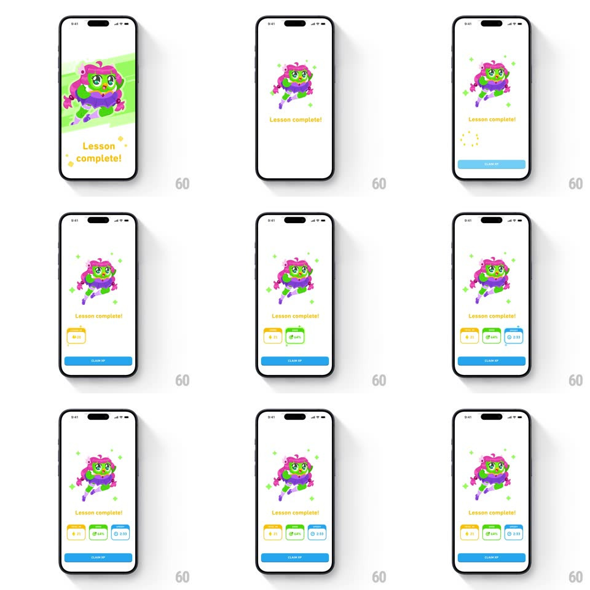

Media
Frame-by-frame

Rebuild this animation 1:1: Duolingo's anime lesson-complete celebration - an anime-style green-haired character springs in on a green brush backdrop, "Lesson complete!" bounces in below, and reward cards (XP, accuracy, time) pop in one by one above the Claim XP button.

Rebuild this animation 1:1: Duolingo's anime lesson-complete celebration - an anime-style green-haired character springs in on a green brush backdrop, "Lesson complete!" bounces in below, and reward cards (XP, accuracy, time) pop in one by one above the Claim XP button. ## Integration Integration: stack-agnostic spec - springs given as stiffness/damping, timed motions as duration + curve; map every value to your framework and animation library of choice. ## Scene White screen: a square anime illustration (green-skinned character with magenta hair, dynamic pose) on a light green brush-stroke card, yellow "Lesson complete!" title, a row of three reward cards (XP +21 on yellow, +44% on green, 2:33 timer on blue), and a blue CLAIM XP pill. Small sparkle shapes orbit the character. ## Motion spec Pattern: sequential celebration build, ~2.5s. - Art: the brush card wipes in (diagonal reveal, 350ms) as the character springs in (scale 0.5 -> 1.08 -> 1, spring ~320/16, 500ms) with sparkles popping around it (scale 0 -> 1 -> 0, 400ms, staggered random). - Title: "Lesson complete!" bounces up (translateY 16px -> 0, spring ~300/18) in yellow. - Rewards: the three cards pop in left to right (scale 0.6 -> 1.05 -> 1, spring ~360/20, 100ms stagger); a dotted ring spins briefly where the first card lands. - Button: CLAIM XP slides up and fades in (250ms, +100ms), then holds. ## Calibration - The character art keeps its anime linework crisp - no blur during the spring. - Reward cards land in value order: XP, accuracy, time. ## Reduced motion All elements fade in place (200ms, staggered 80ms); no springs. ## Don't miss - Sparkles are sparse (5-8 shapes) and die out; they never loop. - The green brush card has an irregular hand-painted edge, not a clean rectangle.